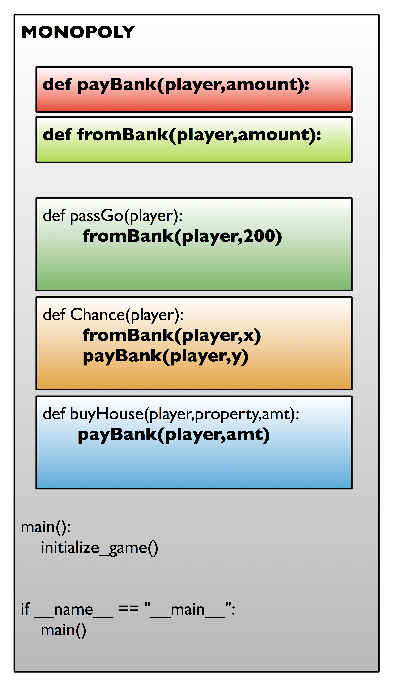
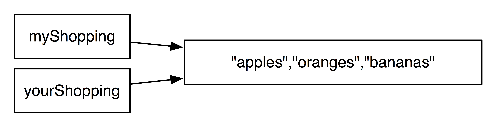
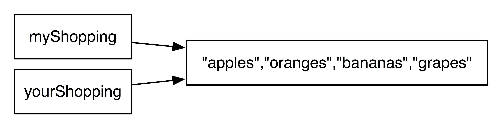
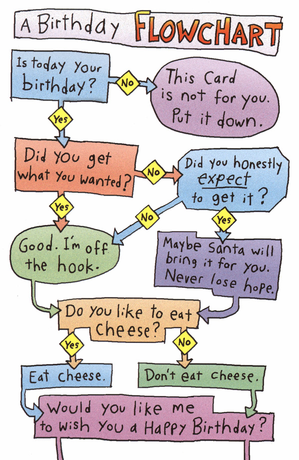

Introduction to Computer Science:
Functions, Graphics, and Objects
Welcome to Unit 3!
- Unit 3, Day 1 - Preparing for Structured Programming
- Unit 3, Day 1-2 - Functions and Parameters
- Unit 3, Day 2-4 - Intro to Graphics
- Unit 3, Day 5-7 - Independent Project 2
- Unit 3, Day 9 - Object-Oriented Programming
1. Preparing for Structured Programming
Before we begin our study of some Structural Elements of Python, there are two things that you should start including in your programs:
- Include a docstring as your first comment in each program or function.
A docstring is a special type of comment, typically enclosed by triple-quotes ("""), and that is placed on the first line of the program or function. The docstring typically includes important information about the program (who wrote it, when, what it does) or function (what the function does). - After writing your main() program, call your main() program with this if statement at the bottom of your program:
if __name__ == "__main__": main()The purpose of this if statement is to allow your programs, increasingly powerful and useful, to be used by other programs by importing them as modules. We'll take advantage of this capability soon.
2. Functions and Parameters
2.a. Definition and Uses of Functions
A function is simply a small program inside a larger one, whose purpose is to:
- organize your program into logical blocks of code
- reduce duplicated code (shortening and simplifying your program)
- make your program easier to maintain (by keeping your code better organized)
You should include functions in your program if:
- You find that you're repeating code
- Your program takes up more than "one screen" of space
Imagine that you're writing a program to play the game of "Monopoly." As part of that game, you know that players are occasionally going to be paying the bank money. Because of this, it makes some sense to write a function that will take care of that transaction. In this outline of part of the program, you can see that there's a function payBank, which will be called anytime some player needs to pay the bank some amount of money.
You can also see in this outline that the programmer has written a passGo function, to be called anytime a players motion on the board takes him past the "Go" square. The passGo function, in turn, calls the function fromBank, which takes care of distributing money to players.
It should be clear that the program outline above isn't complete—there's still a lot of work that needs to be done. But we've begun our coding by considering the pieces—the functions—that we'll be writing. By breaking our code up into logical chunks, it will be far easier to write programs.
2.b. Parameters and Scope
One use of a function is simply to organize your code so that it's easier for programmers to read and manage.
Let's say that you're writing a program that allows the user to play Blackjack on the computer. If you want to print out the instructions for the user, you could certainly put a bunch of print statements in the main() body of your program. That's what we've done up to this point.
But it's better to move that block of print statements to someplace else—to a function—and then we'll just call that function if needed. The code looks like this:
Notice that my main() program now is much less cluttered and easier to read, now that I'm using it to call other functions.
In this first example, we didn't need to pass any information back and forth between the main program and the function, but most programs DO need some way of doing that. How do you pass information into the function so that it can actually do something useful? You use parameters.
A parameter is information that is passed into a function.
A formal parameter is included in parentheses as part of the function definition. The actual parameter, either a variable or a value, is included in parentheses when the function is called.
Let's take a look at a complete program that actually uses parameters.
You can probably guess exactly how this program works. At run time, the main program is called, which asks the user to input two numbers, after which the add_them procedure is called, with those two variables as parameters. In the add_them function, the formal parameters (variables) number1 and number2 refer to the actual parameters n1 and n2. Printing number1 refers to whatever value was referred to when the function was called... and that was n1. The function takes n1 and n2 and prints their sum. Pretty straightforward to this point.
We need to talk about scope for a minute, though.
Scope refers to the location in a program where a particular variable may be used.
Local scope variables may be used "locally" (in the current function), but don't have any value outside the function.
Global scope variables have value outside a given function, and may be referred to inside a function, but they typically can't be changed by that function.
In our Calculator Program, n1 and n2 are local to main(), and global to add_them. number1 and number2 are local to add_them, and undefined outside of that function.
Examine the following function, and predict what the output of each of the statements will be.
2.c. Examples of functions
Well, let's try writing a small program to practice using a simple function.
Write a short program to print all the lyrics to the song "99 bottles of beer on the wall." The program should use a single function "print_lyrics," that takes a single integer parameter to print out a verse of the song. The main program should then call that function from inside a loop.
Now that we've actually coded a function, let's look at another example where functions might come in handy. We won't actually do any coding on these, perhaps, but let's see if we can't figure out where functions might come in handy.
Write the initial flowchart for a program that allows the user to play Blackjack against the computer.
Take a moment to think about what the design for this program is going to look like, and make a flowchart for the basic game.
You don't need to get too detailed at this point. Let's just do one main loop that will identify 2-4 steps in running this game.
Here's one possibility:
What do you think the algorithm for dealing cards might look like? Let's drill down a little deeper and consider what steps—what loops, what branches—we might include in our card-dealing function.
Here's one way it might work:
2.d. Getting information back out of a function
We've learned that you can pass information into a function using parameters. But how do you get information back out?
Let's take a look at our calculator program again. What if we'd written this:
This program won't work as we need it to, because the variable answer is "local to add_them", and undefined in our main program. We need to get the answer back out of the function somehow.
Our programming solution is to return a value.
A return statement in a function that returns operation of a program back to the point where the function was called. Any variables included as part of the return statement are sent back to the function call as a result.
Here's a version of our program, then, that does work:
One common use for functions is to gather user input. Writing separate functions for "initializing" a program (setting initial values for data) and actually processing that data is very common.
Write a small program that includes a function to get the user's name and age. The function should pass this information back to the main program.
Now try this one:
Write a small program that includes two functions: one to get the dimensions of a quadrilateral, and one to calculate the area and perimeter of that quadrilateral.
Homework
Ready Chapter 6, Sections 6.1-6.7, do Ch 6 programming exercises #1, #3, upload to server.
2.e. Immutable vs. Mutable, Assignment by Reference vs. Assignment by Value
While Python is a very straightforward computer language in many ways, it does have a few characteristics that make working with it tricky for the uninitiated. Now that we're starting to build programs with a little complexity to them, let's take a look at two aspects of Python that sometimes cause difficulty.
2.e.i. Immutable vs. Mutable Data Types
In Python, numbers, strings, and tuples (about which we haven't yet learned) are immutable objects—they can't be changed.
What that means is that when we say a = 1 in Python, the value "1" can't be changed. We can certainly assign a new value to a by using a statement like a = a + 1, but the value of "1" itself hasn't changed.
That may seem like a silly, obvious example, but it's important to begin there. Here's a slightly more sophisticated one. If we say name = "Rich", the string "Rich" is also immutable—it can't be changed. We could find out what the fourth letter is by saying print name[3], but we can't say name[3] = "k" to change the name. Why? Because "strings are immutable."
Lists and dictionaries (about which we haven't yet learned), are mutable. A list can be changed by altering an element in that list.
We've already done just that in some of the programs that we've written:
Knowing which of your data are immutable and which are mutable is important for understanding the next topic. Read on.
2.e.ii. Assignment by Reference vs. Assignment by Value
Here's the tricky part.
How does this affect your programming? When you're assigning immutable values to a variable, you don't have to worry much. Let's see what it looks like in the computer's memory after you write these instructions:
As you can see here, Python has set up a reference to the value of myAge, so that both variables are referring to the same object, the value 25.
This typically isn't a problem. If you want to add a year to myAge, you'd probably do it this way, and it works just fine.
myAge has a new object for its value, the integer object 26.
What about this though?
This is the same thing that we had before, in which both variables—myShopping and yourShopping—having been set up with references to the same object: that list of items.
Lists are mutable objects, and so we almost always want to change their values, perhaps like this:
Because lists are mutable, changing the list doesn't create a new object—it just changes the value of the old object, and that object (the list) is still referred to by two different variables. As a result:
By adding an item to the mutable list myShopping, I've effectively added that same item to yourShopping as well. That's what it seems like, anyway, but experienced Python programmers know that you've really just been referring to the same object: that mutable list.
So be aware of this difference.
If it turns out that you really do want to make a separate copy of a mutable object like a list, to be copied into a second variable, there are several ways to do it. Here's one:
When you use the slice operator [:] with myShopping, it produces a list of the items there, and assigns them into yourShopping as a separate list.
For a more complex copy—say a list-within-a-list, or an object—it's convenient to be able to use the copy module:
Now myShopping and yourShopping are two completely separate lists.
2.f. Another way of getting data from a function
It's very important to understand that when a function uses data that has been passed in to it via a parameter, changing the value of that parameter while inside the function has no effect on the global variable. To see what we mean, take a look at the following example:
You'd be forgiven for expecting that adding 1 to my_age from within the function might affect the global variable—indeed, some languages work that way. Python does not.
Global variables—variables outside a function, whose information may be passed in via a parameter—aren't affected by function because the formal parameter of the function (age in this example) only receives a copy of the information in the actual parameter—the formal parameter doesn't actually point to the variable we indicated. This process of taking a variable's value and passing it in to the function is called, strangely enough, "passing by value."
An exception to this rule is when a parameter is a mutable object, like a list. If a list is modified by a function, the list will contain those updated values. For lists, the parameter is "passed by reference," meaning the formal parameter in the function does refer to the actual parameter outside the function.
To see this in action, let's take a look at function that is designed to add interest to a list of bank accounts.
A program has a list of bank account balances, and we wish to add 10% interest to each of the accounts by calling the function add_interest:
The function might be written like this:
It's easy to make a mistake here, though. What's wrong with this next program? Why won't it work as intended?
Homework
Do Ch 6 programming exercises #7, #12, upload to server.
3. Intro to Graphics
Up to this point in the course, we've been working in text-mode only, and interacting with the computer via a Terminal.
Most computers, though, allow one to manipulate the individual "picture elements," or pixels, on the screen. It is by creative use of these pixels that Microsoft's Windows, Apple's OS X, and Linux's Gnome and KDE graphical user interfaces (GUIs) give the user a kinder, gentler, graphics-based experience.
We won't be developing full graphics interfaces in here, but we can play around with some of the concepts in Python. We'll be looking at two different graphics options:
- graphics.py
This nifty little module was put together by Zelle, the author of our textbook. While it's not as full-featured as some more extensive graphics packages, what it lacks in power it makes for in convenience. It's a single module that's easy to install, and will do just about everything you need for studying graphics in this course. - pygame
Pygame is a powerful module that allows one to create a far more powerful, complex, and feature-rich graphics environment. Because it makes better use of the graphics capabilities of your computer, however, installing pygame can be a challenge, particularly if you're working on a number of different platforms, or using different versions of Python in your development.
Which package you use depends on what your needs/interests are. Students who don't planning on doing as much with graphics will be perfectly content with graphics.py, while students who want more speed and power from their graphics (including the ability to write a decent game) will want to explore pygame.
You can find information on each module here.
3.a. Practicing Animation
Work your way through the following graphics.py examples in part 1 (graphics.py) of the lesson above.
Then, try this one:
Using the graphics module, create a graphics window of your choosing that includes at least 3 different graphics elements, at least one of which animates during the program's operation.
4. Independent Project 2
We've covered a great deal of information very quickly in the last few weeks.
- Assigning values to variables is essential for performing calculations.
- input() for numbers, raw_input() for strings, and print statements for output allow us to communicate with our programs.
- for loops and while loops allow us to repeat a sequence of instructions very quickly.
- if-elif-else statements allow our programs to make decisions
- def allows us to define functions that provide convenient organization and re-use of code.
- import allows us to use programs (modules) that have been written by others.
We've had a little bit of practice with all of these things, and now we want to take a few moments to try to put a lot of these ideas together.
One of the items that we haven't covered much in these online documents is using flowcharts and pseudocode to plan your programming. The larger the program, the more you'll benefit from taking a few moments to think about how you want to structure your program.
Now that we know a little about building structured programs and working with computer graphics, let's try Independent Project 2.
5. Object-Oriented Programming
Object-oriented programming is an exceptionally bad idea that could only have originated in California.
-- Edsger Dijkstra
5.a. Objects, Classes, Instances, and Methods
Object-oriented programming is a way of analyzing problems and developing program solutions that make use of objects. This is a confusing topic for some people at first—the theory can be a bit abstract—so we’re going to approach it by looking at a series of examples: some examples that you've already seen (perhaps without knowing about it), some abstract but common-sense examples, and then some more concrete.
You should also know that learning about object-oriented programming is, at first, very much an exercise in vocabulary. Part of learning about OOP is learning how to use a few special terms.
An object is a "thing" in a programming language—an "entity—that has both attributes (values that describe the object) and methods (actions or behaviors that you can do to an object).
Examples of objects in Python include a list, the integer 7, a function, a string, and even an entire program. In fact, everything in Python is an object.
Okay, so we've got these objects. So what?
A class is specific group of objects that all share some qualities in common.
An instance is a single object from a given class. So every object is an instance of a class.
Examples of various types of classes:
- [1,2,3] is an object, and an instance of the class list.
- "joey" is an object, and an instance of the class string.
- If a = 3, a is an object, and an instance of the class int.
- myDog is an object, and an instance of the class canines. This one I actually made up, but that's exactly what we're going to be doing: making up classes that are useful to us in writing our programs.
Okay, so I've got a bunch of instances of these different classes. Now what?
Objects have attributes and methods.
- An attribute stores information about an object in a variable. Attributes may also be called instance variables.
- A method is something that you can do to the object.
Hint: You can easily tell attributes and methods for an object because of dot that separates the instance and the attribute or method.
Example:
The graphics.py module that we've used to create graphics allows one to draw circles. Look at the following three statements.
This first line creates an "instance" of the class "Circle," called "myCirc".
Here we've used the method "setFill" to do something to our object—we've set the color of the circle to red.
The "getRadius" method returns the radius of the circle.
The value of the radius, 5, is stored in an instance variable myCirc.radius. (Typically, instance variables for an object are not directly accessed except via a method designed to return the value.)
Are you confused yet? Like everything else in programming, it will take a few times practicing all of this before it starts to make a little sense.
5.b. Some Examples of classes
Let's try another example of a Class, this one a little more abstract. We won't be programming this, but we'll consider a common object, and see if we can't create some attributes and methods for that class.
Problem: In order to be able to operate an iPod MP3 player, an object-oriented program is going to define a class called mp3Player. The program begins by creating an instance of the class:
What attributes (properties) and methods (things that get done to the player) should the mp3Player class have?
Well, okay. Maybe this is starting to make a little more sense, but we should definitely look at an example. Without actually digging into the code of writing a class just yet, let's look at one that's already been written for us.
The class Coin represents a coin that may be flipped into the air, with a result of "heads" or "tails" when it lands.
What does this program statement do?
What do you think this statement will do?
What does this program statement do?
What does myCoin.status represent?
5.c. Writing a class
We're not really at a point where you can run out and write your own class yet, but we're getting close. Let's take a look at the Coin class that we used above, and see how it was written.
Enter this program, and play around with it a little bit to see if you can understand how the pieces fit together.
Then, once you're done with that, take a look at this next program. It's incomplete—the documentation refers to some methods that haven't been defined just yet—but you should be able to follow through a get some idea of what's going on.
Then answer the questions down below.
Use your analysis of the program above, planet_class_demo.py, to answer the following questions.
1. myPlanet and Planet are:
a. an instance and a class
b. a method and a class
c. a class and an instance
d. an attribute and a class
2. A(n) __________ stores info about an object, while a(n) ________________ does something to an object.
a. attribute, instance
b. instance, method
c. method, attribute
d. attribute, method
3. The planet Mercury has a mass of 3.3e23 kg, a radius of 2.4e6 m, and an orbital radius of 5.8e10 m. What statement would you place in your main() program to create an object for this planet? How would you use the object to print out Mercury's mass from your program?
4. The program already has one Accessor method that calculates the planet's Volume. Write a method that calculates the planet's density, and write a statement in your main() program to test your method.
5.d. Writing your own Classes and Objects
Despite that fact that you've been using classes and objects from the very first day of this course, writing one's own classes and objects, at least for the smaller scale programs that we're working with in this introductory class, is usually more trouble than it's worth, and entirely unnecessary except as an exercise.
You will not be required to use Object-Oriented Programming in the development of programs in here.
That being said, writing objects and classes can be extraordinarily useful, and you may enjoy playing around with the ideas behind classes, objects, instances, attributes, and methods. If you wish to write object-oriented programs for your assignments in here, feel free to.
And don't forget to dig through the Assignments folder, where you may find object-oriented versions of some of the program assignments.